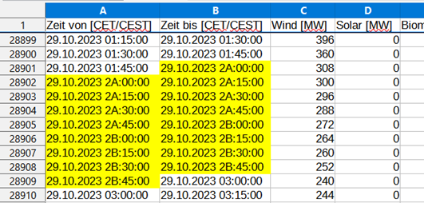

# Preparation: reload modules from the previous chapter
import numpy as np
import pandas as pd6 Download Austrian Market Transparency Data
After selecting the desired period, click Export, then the Download button will appear.


The date format of the files depends on the language setting of the website (German/English).
:::
The following file is attached to this script.
| Data | Filename |
|---|---|
| Realized Electricity Generation 2023 | AGPT_2022-12-31T23_00_00Z_2023-12-31T23_00_00Z_15M_de_2024-06-10T09_32_38Z.csv |
In this dataset, the switch from daylight saving time to standard time on the last Sunday in October results in the 2 AM hour being recorded twice (while one hour is missing during the switch from standard to daylight saving time on the last Sunday in March). The duplicate hour is marked in the dataset as 2A and 2B. (Information from Austrian Power Grid AG, 13.08.2024)

Read the file so that columns with date and time information are recognized as datetime. Resolve the daylight saving time transition so that each day has 24 hours.
Tip 6.1: Solution for Austrian Electricity Market Data
TipSimple Approach
The simplest solution is to generate time series and replace the columns ‘Zeit von [CET/CEST]’ and ‘Zeit bis [CET/CEST]’ with them.
start_times = pd.date_range(start = "2023-01-01T00:00", end = "2023-12-31T23:45", freq = '15min')
end_times = pd.date_range(start = "2023-01-01T00:15", end = "2024-01-01T00:00", freq = '15min')
print(start_times[8070:8078], "\n")
print(end_times[8070:8078], "\n")Read File and String Manipulation
First, the file is read in. Cells that cannot be converted to datetime can be displayed using Python.
# Read file
generation_austria = pd.read_csv(filepath_or_buffer = "01-daten/AGPT_2022-12-31T23_00_00Z_2023-12-31T23_00_00Z_15M_de_2024-06-10T09_32_38Z.csv",
sep = ";", decimal = ",", thousands = ".")
# Identify cells with invalid datetime strings
print("Column 'Zeit von [CET/CEST]'")
i = 0
invalid_positions = []
for element in generation_austria['Zeit von [CET/CEST]']:
try:
pd.to_datetime(element, format = "%d.%m.%Y %H:%M:%S")
except:
print(element)
invalid_positions.append(i)
i += 1
print("\nThe cells have the row indices: ", invalid_positions, "\n")
print("Column 'Zeit von [CET/CEST]'")
i = 0
invalid_positions = []
for element in generation_austria['Zeit von [CET/CEST]']:
try:
pd.to_datetime(element, format = "%d.%m.%Y %H:%M:%S")
except:
print(element)
invalid_positions.append(i)
i += 1
print("\nThe cells have the row indices: ", invalid_positions, "\n")Column 'Zeit von [CET/CEST]'
29.10.2023 2A:00:00
29.10.2023 2A:15:00
29.10.2023 2A:30:00
29.10.2023 2A:45:00
29.10.2023 2B:00:00
29.10.2023 2B:15:00
29.10.2023 2B:30:00
29.10.2023 2B:45:00
The cells have the row indices: [28900, 28901, 28902, 28903, 28904, 28905, 28906, 28907]
Column 'Zeit von [CET/CEST]'
29.10.2023 2A:00:00
29.10.2023 2A:15:00
29.10.2023 2A:30:00
29.10.2023 2A:45:00
29.10.2023 2B:00:00
29.10.2023 2B:15:00
29.10.2023 2B:30:00
29.10.2023 2B:45:00
The cells have the row indices: [28900, 28901, 28902, 28903, 28904, 28905, 28906, 28907]
To correctly read the date columns, the strings “2A” and “2B” are replaced with “02” using the str.replace() method. This creates a duplicate in the dataset.
# String replace & convert to datetime
## Column 'Zeit von [CET/CEST]'
generation_austria['Zeit von [CET/CEST]'] = generation_austria['Zeit von [CET/CEST]'].str.replace(pat = '2A', repl = '02')
generation_austria['Zeit von [CET/CEST]'] = generation_austria['Zeit von [CET/CEST]'].str.replace(pat = '2B', repl = '02')
generation_austria['Zeit von [CET/CEST]'] = pd.to_datetime(generation_austria['Zeit von [CET/CEST]'], format = "%d.%m.%Y %H:%M:%S")
## Column 'Zeit bis [CET/CEST]'
generation_austria['Zeit bis [CET/CEST]'] = generation_austria['Zeit bis [CET/CEST]'].str.replace(pat = '2A', repl = '02')
generation_austria['Zeit bis [CET/CEST]'] = generation_austria['Zeit bis [CET/CEST]'].str.replace(pat = '2B', repl = '02')
generation_austria['Zeit bis [CET/CEST]'] = pd.to_datetime(generation_austria['Zeit bis [CET/CEST]'], format = "%d.%m.%Y %H:%M:%S")
print(generation_austria.info())<class 'pandas.DataFrame'>
RangeIndex: 35040 entries, 0 to 35039
Data columns (total 15 columns):
# Column Non-Null Count Dtype
--- ------ -------------- -----
0 Zeit von [CET/CEST] 35040 non-null datetime64[us]
1 Zeit bis [CET/CEST] 35040 non-null datetime64[us]
2 Wind [MW] 35040 non-null float64
3 Solar [MW] 35040 non-null float64
4 Biomasse [MW] 35040 non-null float64
5 Gas [MW] 35040 non-null float64
6 Kohle [MW] 35040 non-null float64
7 Öl [MW] 35040 non-null float64
8 Geothermie [MW] 35040 non-null float64
9 Pumpspeicher [MW] 35040 non-null float64
10 Lauf- und Schwellwasser [MW] 35040 non-null float64
11 Speicher [MW] 35040 non-null float64
12 Sonstige Erneuerbare [MW] 35040 non-null float64
13 Müll [MW] 35040 non-null float64
14 Andere [MW] 35040 non-null float64
dtypes: datetime64[us](2), float64(13)
memory usage: 4.0 MB
NoneDetermine index positions of the duplicated and missing hour
In the next step, we determine the index positions of the duplicated and the missing hour.
For this purpose, a new object is created that accesses the memory area of the date columns (which is not strictly necessary).
The position of the duplicated hour is determined using the method pd.Series.duplicated(), which returns a logical vector.
This vector is then used for slicing and output of the index position.
By subtracting 4, the index of the first hour is displayed (the dataset is based on quarter-hour intervals).
duplicated hour
# create new object
austria_dates = generation_austria[['Zeit von [CET/CEST]', 'Zeit bis [CET/CEST]']].copy()
# determine index position of the duplicated hour
## Time from
position_duplicated_hour_from = austria_dates['Zeit von [CET/CEST]'][austria_dates['Zeit von [CET/CEST]'].duplicated()].index - 4
print(f"The duplicated hour (Time from):\n{austria_dates.loc[position_duplicated_hour_from, 'Zeit von [CET/CEST]']}\n"
f"is located at index position\n {position_duplicated_hour_from}\n"
f"\nThe next hour is:\n{austria_dates.loc[position_duplicated_hour_from + 4, 'Zeit von [CET/CEST]']}"
f"\n\nBoth hours are identical.")
### End of the shift in column Time from
end_shift_from = position_duplicated_hour_from[-1]
print(f"\nThe time shift in column 'Time from' ends at index position: {end_shift_from}")
## Time to
position_duplicated_hour_to = austria_dates['Zeit bis [CET/CEST]'][austria_dates['Zeit bis [CET/CEST]'].duplicated()].index - 4
print(f"\n\nThe duplicated hour (Time to):\n{austria_dates.loc[position_duplicated_hour_to, 'Zeit bis [CET/CEST]']}\n"
f"is located at index position\n {position_duplicated_hour_to}\n"
f"\nThe next hour is:\n{austria_dates.loc[position_duplicated_hour_to + 4, 'Zeit bis [CET/CEST]']}"
f"\n\nBoth hours are identical.")
### End of the shift in column Time to
end_shift_to = position_duplicated_hour_to[-1]
print(f"\nThe time shift in column 'Time to' ends at index position: {end_shift_to}")The duplicated hour (Time from):
28900 2023-10-29 02:00:00
28901 2023-10-29 02:15:00
28902 2023-10-29 02:30:00
28903 2023-10-29 02:45:00
Name: Zeit von [CET/CEST], dtype: datetime64[us]
is located at index position
RangeIndex(start=28900, stop=28904, step=1)
The next hour is:
28904 2023-10-29 02:00:00
28905 2023-10-29 02:15:00
28906 2023-10-29 02:30:00
28907 2023-10-29 02:45:00
Name: Zeit von [CET/CEST], dtype: datetime64[us]
Both hours are identical.
The time shift in column 'Time from' ends at index position: 28903
The duplicated hour (Time to):
28899 2023-10-29 02:00:00
28900 2023-10-29 02:15:00
28901 2023-10-29 02:30:00
28902 2023-10-29 02:45:00
Name: Zeit bis [CET/CEST], dtype: datetime64[us]
is located at index position
RangeIndex(start=28899, stop=28903, step=1)
The next hour is:
28903 2023-10-29 02:00:00
28904 2023-10-29 02:15:00
28905 2023-10-29 02:30:00
28906 2023-10-29 02:45:00
Name: Zeit bis [CET/CEST], dtype: datetime64[us]
Both hours are identical.
The time shift in column 'Time to' ends at index position: 28902missing hour
Daylight saving time begins on the last Sunday in March.
The missing hour does not lie within range(0, 24).
This condition can be checked in four steps:
March:
march = pd.Series[pd.Series.dt.month == 3]Sundays in March:
sundays = march[march.dt.dayofweek == 6]last Sunday in March: The last 23*4 entries represent the last Sunday of the month (23 because one hour is missing).
last_sunday = sundays[-23*4:]missing hour:
np.argwhere(np.invert(pd.Series(range(0,24)).isin(last_sunday.dt.hour)))
# determine index position of the missing hour
## Time from
### Month of March
mask_march_from = austria_dates['Zeit von [CET/CEST]'].dt.month == 3
austria_dates_march_from = austria_dates.loc[mask_march_from, 'Zeit von [CET/CEST]']
print(f"The month of March (Time from):\n{austria_dates_march_from.head}\n");
### last Sunday
mask_sunday_from = (austria_dates_march_from.dt.dayofweek == 6)
last_sunday_from = (austria_dates_march_from[mask_sunday_from])[-23*4:]
print(f"The last Sunday in March:\n{last_sunday_from}\n")
### missing hour
print(last_sunday_from.dt.hour)
missing_hour_from = np.argwhere(np.invert(pd.Series(range(0,24)).isin(last_sunday_from.dt.hour))).item()
print(f"\nThe missing hour is:\n{missing_hour_from}\n")
print(last_sunday_from[last_sunday_from.dt.hour == (missing_hour_from - 1)],
last_sunday_from[last_sunday_from.dt.hour == (missing_hour_from + 1)], sep = "\n")
### start of the shift in column Time from
start_shift_from = last_sunday_from[last_sunday_from.dt.hour == (missing_hour_from + 1)].index[0]
print(f"\nThe time shift in the column 'Time from' starts at index position: {start_shift_from}\n\n")
## Time to
### Month of March
mask_march_to = austria_dates['Zeit bis [CET/CEST]'].dt.month == 3
austria_dates_march_to = austria_dates.loc[mask_march_to, 'Zeit bis [CET/CEST]']
print(f"The month of March (Time to):\n{austria_dates_march_to.head}\n");
### last Sunday
mask_sunday_to = (austria_dates_march_to.dt.dayofweek == 6)
last_sunday_to = (austria_dates_march_to[mask_sunday_to])[-23*4:]
print(f"The last Sunday in March:\n{last_sunday_to}\n")
### missing hour
print(last_sunday_to.dt.hour)
missing_hour_to = np.argwhere(np.invert(pd.Series(range(0,24)).isin(last_sunday_to.dt.hour))).item()
print(f"\nThe missing hour is:\n{missing_hour_to}\n")
print(last_sunday_to[last_sunday_to.dt.hour == (missing_hour_to - 1)],
last_sunday_to[last_sunday_to.dt.hour == (missing_hour_to + 1)], sep = "\n")
### start of the shift in column Time to
start_shift_to = last_sunday_to[last_sunday_to.dt.hour == (missing_hour_to + 1)].index[0]
print(f"\nThe time shift in the column 'Time to' starts at index position: {start_shift_to}")The month of March (Time from):
<bound method NDFrame.head of 5664 2023-03-01 00:00:00
5665 2023-03-01 00:15:00
5666 2023-03-01 00:30:00
5667 2023-03-01 00:45:00
5668 2023-03-01 01:00:00
...
8631 2023-03-31 22:45:00
8632 2023-03-31 23:00:00
8633 2023-03-31 23:15:00
8634 2023-03-31 23:30:00
8635 2023-03-31 23:45:00
Name: Zeit von [CET/CEST], Length: 2972, dtype: datetime64[us]>
The last Sunday in March:
8064 2023-03-26 00:00:00
8065 2023-03-26 00:15:00
8066 2023-03-26 00:30:00
8067 2023-03-26 00:45:00
8068 2023-03-26 01:00:00
...
8151 2023-03-26 22:45:00
8152 2023-03-26 23:00:00
8153 2023-03-26 23:15:00
8154 2023-03-26 23:30:00
8155 2023-03-26 23:45:00
Name: Zeit von [CET/CEST], Length: 92, dtype: datetime64[us]
8064 0
8065 0
8066 0
8067 0
8068 1
..
8151 22
8152 23
8153 23
8154 23
8155 23
Name: Zeit von [CET/CEST], Length: 92, dtype: int32
The missing hour is:
2
8068 2023-03-26 01:00:00
8069 2023-03-26 01:15:00
8070 2023-03-26 01:30:00
8071 2023-03-26 01:45:00
Name: Zeit von [CET/CEST], dtype: datetime64[us]
8072 2023-03-26 03:00:00
8073 2023-03-26 03:15:00
8074 2023-03-26 03:30:00
8075 2023-03-26 03:45:00
Name: Zeit von [CET/CEST], dtype: datetime64[us]
The time shift in the column 'Time from' starts at index position: 8072
The month of March (Time to):
<bound method NDFrame.head of 5663 2023-03-01 00:00:00
5664 2023-03-01 00:15:00
5665 2023-03-01 00:30:00
5666 2023-03-01 00:45:00
5667 2023-03-01 01:00:00
...
8630 2023-03-31 22:45:00
8631 2023-03-31 23:00:00
8632 2023-03-31 23:15:00
8633 2023-03-31 23:30:00
8634 2023-03-31 23:45:00
Name: Zeit bis [CET/CEST], Length: 2972, dtype: datetime64[us]>
The last Sunday in March:
8063 2023-03-26 00:00:00
8064 2023-03-26 00:15:00
8065 2023-03-26 00:30:00
8066 2023-03-26 00:45:00
8067 2023-03-26 01:00:00
...
8150 2023-03-26 22:45:00
8151 2023-03-26 23:00:00
8152 2023-03-26 23:15:00
8153 2023-03-26 23:30:00
8154 2023-03-26 23:45:00
Name: Zeit bis [CET/CEST], Length: 92, dtype: datetime64[us]
8063 0
8064 0
8065 0
8066 0
8067 1
..
8150 22
8151 23
8152 23
8153 23
8154 23
Name: Zeit bis [CET/CEST], Length: 92, dtype: int32
The missing hour is:
2
8067 2023-03-26 01:00:00
8068 2023-03-26 01:15:00
8069 2023-03-26 01:30:00
8070 2023-03-26 01:45:00
Name: Zeit bis [CET/CEST], dtype: datetime64[us]
8071 2023-03-26 03:00:00
8072 2023-03-26 03:15:00
8073 2023-03-26 03:30:00
8074 2023-03-26 03:45:00
Name: Zeit bis [CET/CEST], dtype: datetime64[us]
The time shift in the column 'Time to' starts at index position: 8071With the stored index positions, the corresponding timestamps can now be shifted:
Column Time from: 8072 (object
start_shift_from) to 28903 (objectend_shift_from)Column Time to: 8071 (object
start_shift_to) to 28902 (objectend_shift_to)
For slicing, the method pd.Series.iloc[] is used, which indexes exclusively — that is, the end positions must be increased by 1.
By subtracting pd.Timedelta(1, unit='h'), the time shift is removed from the dataset.
# correct time shift
## Time from
austria_dates['Zeit von [CET/CEST]'].iloc[start_shift_from : end_shift_from + 1] = (
austria_dates['Zeit von [CET/CEST]']
.iloc[start_shift_from : end_shift_from + 1]
.subtract(pd.Timedelta(1, unit='h'))
)
generation_austria['Zeit von [CET/CEST]'] = austria_dates['Zeit von [CET/CEST]']
## Time to
austria_dates['Zeit bis [CET/CEST]'].iloc[start_shift_to : end_shift_to + 1] = (
austria_dates['Zeit bis [CET/CEST]']
.iloc[start_shift_to : end_shift_to + 1]
.subtract(pd.Timedelta(1, unit='h'))
)
generation_austria['Zeit bis [CET/CEST]'] = austria_dates['Zeit bis [CET/CEST]']
# verification
print("Verification in the dataset +/- one quarter hour\n")
print("The column 'Time from'")
print(generation_austria['Zeit von [CET/CEST]'].iloc[start_shift_from - 1 : end_shift_from + 2], "\n")
print("The column 'Time to'")
print(generation_austria['Zeit bis [CET/CEST]'].iloc[start_shift_to - 1 : end_shift_to + 2], "\n")Verification in the dataset +/- one quarter hour
The column 'Time from'
8071 2023-03-26 01:45:00
8072 2023-03-26 03:00:00
8073 2023-03-26 03:15:00
8074 2023-03-26 03:30:00
8075 2023-03-26 03:45:00
...
28900 2023-10-29 02:00:00
28901 2023-10-29 02:15:00
28902 2023-10-29 02:30:00
28903 2023-10-29 02:45:00
28904 2023-10-29 02:00:00
Name: Zeit von [CET/CEST], Length: 20834, dtype: datetime64[us]
The column 'Time to'
8070 2023-03-26 01:45:00
8071 2023-03-26 03:00:00
8072 2023-03-26 03:15:00
8073 2023-03-26 03:30:00
8074 2023-03-26 03:45:00
...
28899 2023-10-29 02:00:00
28900 2023-10-29 02:15:00
28901 2023-10-29 02:30:00
28902 2023-10-29 02:45:00
28903 2023-10-29 02:00:00
Name: Zeit bis [CET/CEST], Length: 20834, dtype: datetime64[us]
/tmp/ipykernel_3849/2335431116.py:3: ChainedAssignmentError: A value is being set on a copy of a DataFrame or Series through chained assignment.
Such chained assignment never works to update the original DataFrame or Series, because the intermediate object on which we are setting values always behaves as a copy (due to Copy-on-Write).
Try using '.loc[row_indexer, col_indexer] = value' instead, to perform the assignment in a single step.
See the documentation for a more detailed explanation: https://pandas.pydata.org/pandas-docs/stable/user_guide/copy_on_write.html#chained-assignment
austria_dates['Zeit von [CET/CEST]'].iloc[start_shift_from : end_shift_from + 1] = (
/tmp/ipykernel_3849/2335431116.py:12: ChainedAssignmentError: A value is being set on a copy of a DataFrame or Series through chained assignment.
Such chained assignment never works to update the original DataFrame or Series, because the intermediate object on which we are setting values always behaves as a copy (due to Copy-on-Write).
Try using '.loc[row_indexer, col_indexer] = value' instead, to perform the assignment in a single step.
See the documentation for a more detailed explanation: https://pandas.pydata.org/pandas-docs/stable/user_guide/copy_on_write.html#chained-assignment
austria_dates['Zeit bis [CET/CEST]'].iloc[start_shift_to : end_shift_to + 1] = (Advanced: CAPE Ratio — a dataset full of pitfalls
The 2013 Nobel laureate in Economic Sciences, Robert Shiller, maintains a dataset containing monthly price data of the U.S. stock index S&P 500 and other economic indicators for calculating the inflation-adjusted price-to-earnings ratio (CAPE Ratio).
The dataset is available on Robert Shiller’s website (direct link to the XLS file).
Read in the dataset.
| Data | Filename |
|---|---|
| Monthly price data S&P500 | shiller_data.xls |
Tip 6.4: Notes and sample solution — Shiller data
First, open the dataset in a spreadsheet program. Some remarkable irregularities include:
Metadata in rows 2 and 3, where some column labels are also placed, and additional metadata at the end of the file.
Multi-line column headers.
Empty columns P and N.
Missing values represented by
'NA'and empty cells''.Different formatting for the month of October in the
Datecolumn (YYYY-Mformat).
Tip 6.3: Hints for solving
Due to these numerous irregularities, it’s helpful to read the data and headers separately.
You can determine the correct row index either from your initial spreadsheet inspection or by reading the first 10–20 lines of the dataset in Python.
This makes it easier to inspect the data and manipulate it using string-processing methods.
In practice, it’s often simpler to manually specify the column names using the argument
names = Sequence of column labels to apply
or to define them directly in a spreadsheet editor.
It’s also advisable to proceed step by step, developing a separate solution for each issue, possibly using smaller dataset excerpts or generated test data.
Tip 6.2: Complete sample solution
The dataset is read using the pd.read_excel() function.
The argument sheet_name is used to select the worksheet Data.
With the method pd.DataFrame.head(n = 10), you can identify the row index where the header ends and the data begins. In this case, the header ends at row 8, which corresponds to index 7 in Python.
Read header
file_path = '01-daten/shiller_data.xls'
shiller = pd.read_excel(io=file_path, sheet_name='Data')
# manually identify the end of the header and start of data (commented out)
# print(shiller.head(n=10), "\n")
# read header
shiller_head = pd.read_excel(io=file_path, sheet_name='Data', skiprows=1, nrows=7, header=None)
print(shiller_head, "\n")
print(shiller_head.info()) # empty columns are recognized as numeric 0 1 2 \
0 Stock Market Data Used in "Irrational Exuberan... NaN NaN
1 Robert J. Shiller NaN NaN
2 NaN NaN NaN
3 NaN NaN NaN
4 NaN S&P NaN
5 NaN Comp. Dividend
6 Date P D
3 4 5 6 7 8 9 ... \
0 NaN NaN NaN NaN NaN NaN NaN ...
1 NaN NaN NaN NaN NaN NaN NaN ...
2 NaN NaN NaN NaN NaN NaN NaN ...
3 NaN Consumer NaN NaN NaN NaN Real ...
4 NaN Price NaN Long NaN NaN Total ...
5 Earnings Index Date Interest Real Real Return ...
6 E CPI Fraction Rate GS10 Price Dividend Price ...
12 13 14 15 16 17 18 \
0 Cyclically NaN Cyclically NaN NaN NaN NaN
1 Adjusted NaN Adjusted NaN NaN NaN NaN
2 Price NaN Total Return Price NaN NaN NaN NaN
3 Earnings NaN Earnings NaN NaN Monthly Real
4 Ratio NaN Ratio NaN Excess Total Total
5 P/E10 or NaN TR P/E10 or NaN CAPE Bond Bond
6 CAPE NaN TR CAPE NaN Yield Returns Returns
19 20 21
0 NaN NaN NaN
1 NaN NaN NaN
2 NaN NaN NaN
3 NaN NaN NaN
4 10 Year 10 Year Real 10 Year
5 Annualized Stock Annualized Bonds Excess Annualized
6 Real Return Real Return Returns
[7 rows x 22 columns]
<class 'pandas.DataFrame'>
RangeIndex: 7 entries, 0 to 6
Data columns (total 22 columns):
# Column Non-Null Count Dtype
--- ------ -------------- -----
0 0 3 non-null str
1 1 3 non-null str
2 2 2 non-null str
3 3 2 non-null str
4 4 4 non-null str
5 5 2 non-null str
6 6 3 non-null str
7 7 2 non-null str
8 8 2 non-null str
9 9 4 non-null str
10 10 2 non-null str
11 11 4 non-null str
12 12 7 non-null str
13 13 0 non-null float64
14 14 7 non-null str
15 15 0 non-null float64
16 16 3 non-null str
17 17 4 non-null str
18 18 4 non-null str
19 19 3 non-null str
20 20 3 non-null str
21 21 3 non-null str
dtypes: float64(2), str(20)
memory usage: 1.3 KB
NoneIsolating column labels
Next, the header can be further processed to isolate the column labels.
There are several possible approaches for this task — the following method is one example, and other alternatives are shown in the next example.
Column-wise concatenation of strings is performed using the method pd.Series.str.cat(), which is only available for pd.Series objects.
Therefore, each column is processed individually in a loop.
Additionally, this method only works with the data type 'string', which is ensured using the method astype('string').
Afterward, text elements that do not belong to the column labels are removed using str.replace().
Here, the argument regex=True proves useful.
# create column labels using a loop
shiller_column_labels = pd.Series()
for column in shiller_head:
shiller_column_labels = pd.concat([
shiller_column_labels,
pd.Series(shiller_head[column].astype('string').str.cat())
])
# clean up strings
## remove first cell content: "Stock Market Data Used in 'Irrational Exuberan...'"
shiller_column_labels = shiller_column_labels.astype('str').replace(shiller_head.loc[0, 0], '', regex=True)
## remove 'Robert J. Shiller'
shiller_column_labels = shiller_column_labels.astype('str').replace(shiller_head.loc[1, 0], '', regex=True)
## remove spaces
## regex=True to remove spaces within strings
shiller_column_labels = shiller_column_labels.astype('str').replace(' ', '', regex=True)
## replace overly long strings
shiller_column_labels = shiller_column_labels.astype('str').replace('CyclicallyAdjustedPriceEarningsRatioP/E10or', '', regex=True)
shiller_column_labels = shiller_column_labels.astype('str').replace('CyclicallyAdjustedTotalReturnPriceEarningsRatioTRP/E10or', '', regex=True)
## reset index
shiller_column_labels.reset_index(inplace=True, drop=True)
print(shiller_column_labels)0 Date
1 S&PComp.P
2 DividendD
3 EarningsE
4 ConsumerPriceIndexCPI
5 DateFraction
6 LongInterestRateGS10
7 RealPrice
8 RealDividend
9 RealTotalReturnPrice
10 RealEarnings
11 RealTRScaledEarnings
12 CAPE
13
14 TRCAPE
15
16 ExcessCAPEYield
17 MonthlyTotalBondReturns
18 RealTotalBondReturns
19 10YearAnnualizedStockRealReturn
20 10YearAnnualizedBondsRealReturn
21 Real10YearExcessAnnualizedReturns
dtype: str
NoteAlternative approaches for string manipulation of the file header
Using the NumPy data type 'str'
Specifying dtype='str' results in the use of the NumPy string data type (dtype='str'), which is mutable.
Only with this data type does string concatenation using the method pd.DataFrame.sum() work properly.
# The NumPy string data type is mutable
my_array = np.array([['1', '2'], ['3', '4']])
my_array[0] = ['a', 'b']
my_arrayarray([['a', 'b'],
['3', '4']], dtype='<U1')With the Pandas data types 'string' and 'object', the approach shown above does not work.
Pandas uses the Python string type, which is immutable.
This means that no method can modify an existing string in place.
Instead, methods like str.replace() return new strings.
## using NumPy string data type
shiller_head = pd.read_excel(io=file_path, sheet_name='Data', skiprows=1, nrows=7, header=None)
# concatenate header with NumPy string type using pd.DataFrame.sum()
# print(shiller_head.astype('str').sum(skipna=True, axis=0))
## cleaning the dataset
### remove nan
shiller_head = shiller_head.astype('str').replace('nan', '')
### remove first cell content: "Stock Market Data Used in 'Irrational Exuberan...'"
shiller_head = shiller_head.astype('str').replace(shiller_head.loc[0, 0], '')
### remove 'Robert J. Shiller'
shiller_head = shiller_head.astype('str').replace(shiller_head.loc[1, 0], '')
### remove spaces
### regex=True to remove spaces within strings
shiller_head = shiller_head.astype('str').replace(' ', '', regex=True)
### replace overly long strings
shiller_head = shiller_head.astype('str').replace('CyclicallyAdjustedPriceEarningsRatioP/E10or', '', regex=True)
shiller_head = shiller_head.astype('str').replace('CyclicallyAdjustedTotalReturnPriceEarningsRatioTRP/E10or', '', regex=True)
### concatenate rows column-wise
shiller_head = shiller_head.astype('str').sum(skipna=True, axis=0)
print("\nConcatenated column names\n", shiller_head)Using DF.agg() or DF.apply()
The Pandas method DF.agg() aggregates a DataFrame row-wise or column-wise using a specified function.
The Pandas method DF.apply() applies a function row-wise or column-wise to a DataFrame.
Essentially, both methods achieve the same result.
For details on using lambda expressions and the join method from Python basics, refer to the provided links.
shiller_head = pd.read_excel(io=file_path, sheet_name='Data', skiprows=1, nrows=7, header=None)
# DF.agg()
print(shiller_head.agg(lambda x: ''.join(x.astype(str))))
# DF.apply()
print(shiller_head.apply(lambda x: ''.join(x.astype(str))))Read in data
When reading the data, the header is checked, and the end of the dataset is examined using the .tail() method to identify rows containing additional metadata.
These metadata rows are then skipped using the argument skipfooter=1.
file_path = '01-daten/shiller_data.xls'
# read data
shiller_data = pd.read_excel(io=file_path, sheet_name='Data', skiprows=8, header=None)
print(shiller_data.head(n=2), "\n")
shiller_data.tail(n=5) 0 1 2 3 4 5 6 7 \
0 1871.01 4.44 0.26 0.4 12.464061 1871.041667 5.32 111.055650
1 1871.02 4.5 0.26 0.4 12.844641 1871.125000 5.323333 109.221413
8 9 ... 12 13 14 15 16 17 18 \
0 6.503259 111.055650 ... NaN NaN NaN NaN NaN 1.004177 1.000000
1 6.310571 109.747294 ... NaN NaN NaN NaN NaN 1.004180 0.974424
19 20 21
0 0.130609 0.092504 0.038106
1 0.130858 0.094635 0.036224
[2 rows x 22 columns]
| 0 | 1 | 2 | 3 | 4 | 5 | 6 | 7 | 8 | 9 | ... | 12 | 13 | 14 | 15 | 16 | 17 | 18 | 19 | 20 | 21 | |
|---|---|---|---|---|---|---|---|---|---|---|---|---|---|---|---|---|---|---|---|---|---|
| 1836 | 2024.01 | 4815.613913 | 70.477403 | NaN | 308.417 | 2024.041667 | 4.06 | 4867.776285 | 71.240809 | 3.221112e+06 | ... | 32.045123 | NaN | 34.620305 | NaN | 0.018641 | 0.991240 | 39.840706 | NaN | NaN | NaN |
| 1837 | 2024.02 | 5011.9615 | 70.651114 | NaN | 310.326 | 2024.125000 | 4.21 | 5035.085170 | 70.977077 | 3.335737e+06 | ... | 33.113433 | NaN | 35.790148 | NaN | 0.016389 | 1.003508 | 39.248767 | NaN | NaN | NaN |
| 1838 | 2024.03 | 5170.5725 | 70.824826 | NaN | 311.2805 | 2024.208333 | 4.21 | 5178.499934 | 70.933413 | 3.434666e+06 | ... | 34.021664 | NaN | 36.786757 | NaN | 0.015239 | 1.004318 | 39.265691 | NaN | NaN | NaN |
| 1839 | 2024.04 | 5243.77 | NaN | NaN | 311.75775 | 2024.291667 | 4.2 | 5243.770000 | NaN | 3.477956e+06 | ... | 34.413463 | NaN | 37.183230 | NaN | 0.014823 | NaN | 39.374882 | NaN | NaN | NaN |
| 1840 | NaN | Apr price is Apr 1st close | NaN | NaN | Mar/Apr CPI estimated | NaN | Apr GS10 is Mar 29th value | NaN | NaN | NaN | ... | NaN | NaN | NaN | NaN | NaN | NaN | NaN | NaN | NaN | NaN |
5 rows × 22 columns
After removing the metadata, the detected data types are checked using the .info() method.
shiller_data = pd.read_excel(io=file_path, sheet_name='Data', skiprows=8, header=None, skipfooter=1)
print(shiller_data.head(n=2), "\n")
print(shiller_data.tail(n=2))
# determine data types
shiller_data.info() 0 1 2 3 4 5 6 7 \
0 1871.01 4.44 0.26 0.4 12.464061 1871.041667 5.320000 111.055650
1 1871.02 4.50 0.26 0.4 12.844641 1871.125000 5.323333 109.221413
8 9 ... 12 13 14 15 16 17 18 \
0 6.503259 111.055650 ... NaN NaN NaN NaN NaN 1.004177 1.000000
1 6.310571 109.747294 ... NaN NaN NaN NaN NaN 1.004180 0.974424
19 20 21
0 0.130609 0.092504 0.038106
1 0.130858 0.094635 0.036224
[2 rows x 22 columns]
0 1 2 3 4 5 6 \
1838 2024.03 5170.5725 70.824826 NaN 311.28050 2024.208333 4.21
1839 2024.04 5243.7700 NaN NaN 311.75775 2024.291667 4.20
7 8 9 ... 12 13 14 15 \
1838 5178.499934 70.933413 3.434666e+06 ... 34.021664 NaN 36.786757 NaN
1839 5243.770000 NaN 3.477956e+06 ... 34.413463 NaN 37.183230 NaN
16 17 18 19 20 21
1838 0.015239 1.004318 39.265691 NaN NaN NaN
1839 0.014823 NaN 39.374882 NaN NaN NaN
[2 rows x 22 columns]
<class 'pandas.DataFrame'>
RangeIndex: 1840 entries, 0 to 1839
Data columns (total 22 columns):
# Column Non-Null Count Dtype
--- ------ -------------- -----
0 0 1840 non-null float64
1 1 1840 non-null float64
2 2 1839 non-null float64
3 3 1836 non-null float64
4 4 1840 non-null float64
5 5 1840 non-null float64
6 6 1840 non-null float64
7 7 1840 non-null float64
8 8 1839 non-null float64
9 9 1840 non-null float64
10 10 1836 non-null float64
11 11 1836 non-null float64
12 12 1720 non-null float64
13 13 0 non-null float64
14 14 1720 non-null float64
15 15 0 non-null float64
16 16 1720 non-null float64
17 17 1839 non-null float64
18 18 1840 non-null float64
19 19 1720 non-null float64
20 20 1720 non-null float64
21 21 1720 non-null float64
dtypes: float64(22)
memory usage: 316.4 KBCombine header and data
Columns with index 13 (column N) and 15 (column P) are empty; these are removed from both the header and the data.
All remaining columns are recognized as floating-point numbers.
This means that the percentage signs in columns with indices 16 and 19–21 (Q, T:V) were handled by division by 100.
With the exception of the Date column, all data types are now correctly recognized.
# remove empty columns
shiller_column_labels = shiller_column_labels.drop(labels=[13, 15])
shiller_data = shiller_data.drop(labels=[13, 15], axis='columns')
# assign column names
shiller_data.columns = shiller_column_labels
shiller_data.info()<class 'pandas.DataFrame'>
RangeIndex: 1840 entries, 0 to 1839
Data columns (total 20 columns):
# Column Non-Null Count Dtype
--- ------ -------------- -----
0 Date 1840 non-null float64
1 S&PComp.P 1840 non-null float64
2 DividendD 1839 non-null float64
3 EarningsE 1836 non-null float64
4 ConsumerPriceIndexCPI 1840 non-null float64
5 DateFraction 1840 non-null float64
6 LongInterestRateGS10 1840 non-null float64
7 RealPrice 1840 non-null float64
8 RealDividend 1839 non-null float64
9 RealTotalReturnPrice 1840 non-null float64
10 RealEarnings 1836 non-null float64
11 RealTRScaledEarnings 1836 non-null float64
12 CAPE 1720 non-null float64
13 TRCAPE 1720 non-null float64
14 ExcessCAPEYield 1720 non-null float64
15 MonthlyTotalBondReturns 1839 non-null float64
16 RealTotalBondReturns 1840 non-null float64
17 10YearAnnualizedStockRealReturn 1720 non-null float64
18 10YearAnnualizedBondsRealReturn 1720 non-null float64
19 Real10YearExcessAnnualizedReturns 1720 non-null float64
dtypes: float64(20)
memory usage: 287.6 KBCorrect date format
The next step is to correct the date format.
The Date column contains strings in the format 'YYYY,MM'.
An exception is the month of October, which is encoded as 'YYYY.M'.
This difference is not visible in the print() output because the display precision is set to 2 decimal places using pd.set_option("display.precision", 2).
The varying string lengths can be visualized with
shiller_data.loc[0:12, 'Date'].astype('str').str.len().
print(shiller_data.loc[0:12, 'Date'], "\n")
try:
pd.to_datetime(shiller_data.loc[0:12, 'Date'], format="%Y.%m")
except ValueError as error:
print(error, "\n")
else:
pd.to_datetime(shiller_data.loc[0:12, 'Date'], format="%Y.%m")
print(shiller_data.loc[0:12, 'Date'].astype('str').str.len(), "\n")0 1871.01
1 1871.02
2 1871.03
3 1871.04
4 1871.05
5 1871.06
6 1871.07
7 1871.08
8 1871.09
9 1871.10
10 1871.11
11 1871.12
12 1872.01
Name: Date, dtype: float64
time data "1871" doesn't match format "%Y.%m". You might want to try:
- passing `format` if your strings have a consistent format;
- passing `format='ISO8601'` if your strings are all ISO8601 but not necessarily in exactly the same format;
- passing `format='mixed'`, and the format will be inferred for each element individually. You might want to use `dayfirst` alongside this.
0 7
1 7
2 7
3 7
4 7
5 7
6 7
7 7
8 7
9 6
10 7
11 7
12 7
Name: Date, dtype: int64
The data type of the Date column is set as a string.
Using a mask, strings with length 6 are identified.
A '0' is appended to these 6-character strings to standardize the date format.
Finally, the column is converted to datetime using pd.to_datetime(format="%Y.%m").
# set data type of 'Date' column to string
# leads to an errormessage:
shiller_data['Date'] = shiller_data['Date'].astype('str')
mask = shiller_data['Date'].str.len() == 6
shiller_data.loc[mask, 'Date'] = shiller_data.loc[mask, 'Date'] + '0'
# display string lengths
print(shiller_data.loc[0:12, 'Date'].str.len())
print(shiller_data.loc[0:12, 'Date'])
# convert 'Date' column to datetime
shiller_data['Date'] = pd.to_datetime(shiller_data['Date'], format="%Y.%m")
shiller_data.info()0 7
1 7
2 7
3 7
4 7
5 7
6 7
7 7
8 7
9 7
10 7
11 7
12 7
Name: Date, dtype: int64
0 1871.01
1 1871.02
2 1871.03
3 1871.04
4 1871.05
5 1871.06
6 1871.07
7 1871.08
8 1871.09
9 1871.10
10 1871.11
11 1871.12
12 1872.01
Name: Date, dtype: str
<class 'pandas.DataFrame'>
RangeIndex: 1840 entries, 0 to 1839
Data columns (total 20 columns):
# Column Non-Null Count Dtype
--- ------ -------------- -----
0 Date 1840 non-null datetime64[us]
1 S&PComp.P 1840 non-null float64
2 DividendD 1839 non-null float64
3 EarningsE 1836 non-null float64
4 ConsumerPriceIndexCPI 1840 non-null float64
5 DateFraction 1840 non-null float64
6 LongInterestRateGS10 1840 non-null float64
7 RealPrice 1840 non-null float64
8 RealDividend 1839 non-null float64
9 RealTotalReturnPrice 1840 non-null float64
10 RealEarnings 1836 non-null float64
11 RealTRScaledEarnings 1836 non-null float64
12 CAPE 1720 non-null float64
13 TRCAPE 1720 non-null float64
14 ExcessCAPEYield 1720 non-null float64
15 MonthlyTotalBondReturns 1839 non-null float64
16 RealTotalBondReturns 1840 non-null float64
17 10YearAnnualizedStockRealReturn 1720 non-null float64
18 10YearAnnualizedBondsRealReturn 1720 non-null float64
19 Real10YearExcessAnnualizedReturns 1720 non-null float64
dtypes: datetime64[us](1), float64(19)
memory usage: 287.6 KB